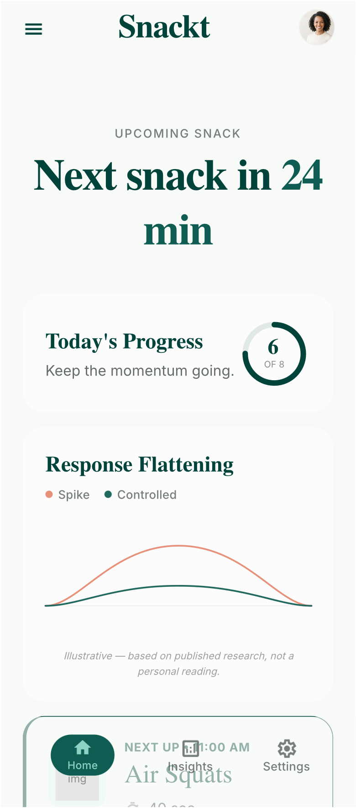

Ten reps an hour.
Verified, not guessed.
The desk-friendly movement coach that uses your Apple Watch and AirPods to verify your exercise snacks hands-free. 40 seconds to counteract sitting and stabilize blood sugar.

The Science of Desk Exercise Snacks
Most desk workers fall into the "Active Sedentary Trap": a 30-minute morning gym session does not protect cardiovascular and metabolic health against 9 hours of continuous sitting.
Post-Meal Glucose Excursion
Simulated glycemic response based on Gao et al. (2024)
*Illustrative — based on published research (Gao et al., 2024, Scandinavian Journal of Medicine & Science in Sports), not a personal diagnostic medical reading.
The 21% Finding
Gao et al. (2024) discovered that interrupting sitting with 10 bodyweight squats every 45–60 minutes lowered postprandial glucose excursions by ~21% across an 8.5-hour workday.
The Soleus Muscle Pump
Your calf and thigh muscles act as metabolic sponges. Contractions activate GLUT4 glucose transporters independently of insulin, pulling glucose directly from your bloodstream without fatigue.
40 Seconds per Bout
You do not need gym clothes, heart-rate spikes, or sweaty 45-minute classes. Just 40 seconds of intentional movement keeps muscle gene expression switched on all day long.
Four Desk-Friendly Exercise Snacks
Designed specifically for office and remote work environments. Zero equipment, zero awkward floor positions, verified in real-time by Apple sensors.

Air Squats
Upright torso with a controlled 90° knee bend. Stimulates maximum leg musculature to clear post-meal glucose spikes.

Calf Raises
Standing tall with heel elevations off the floor line. Activates the specialized soleus oxidative pump silently during Zoom calls.

Incline Push-Ups
Hands planted on a sturdy desk edge at a 45° angle. Reverses hunch posture and stimulates upper-body kinetic chains without getting on the floor.

Standing Marches
Rhythmic knee drives to hip level (90° bend). Decompresses tight lumbar vertebrae and reactivates dormant hip flexors from long sitting blocks.
Verified, Not Guessed. Zero Cameras.
Fitness apps make you awkwardly prop up your camera or manually tap counters. RepSnack uses spatial audio motion sensors and accelerometers to track reps passively.
AirPods Pro & Max
Using CMHeadphoneMotionManager, RepSnack measures 6-axis spatial head displacement. It detects the sinusoidal curve of a squat or march with millimeter accuracy.
- ✓ Real-time spatial tracking
- ✓ Spoken rep feedback in ear
- ✓ No camera permission needed
Apple Watch
Discreet wrist haptics alert you quietly when it is time to move. Complications display your hourly goal, and wrist kinematics track push-ups and calf raises in quiet meetings.
- ✓ Silent taptic nudges
- ✓ Watch face complications
- ✓ Stand hour credit sync
Pocketed iPhone
Don’t have AirPods in? Just slide your iPhone into your front pocket. Torso displacement and pelvic tilt accurately verify your 10 squat reps hands-free.
- ✓ Front pocket motion fusion
- ✓ Dynamic Island countdown
- ✓ Live Activity lock screen
Calendar-Aware Pausing
Never get buzzed during an executive presentation. RepSnack checks your local device calendar. If you have an event with other attendees or a Zoom/Meet link, nudges pause automatically. If 2 hours pass without a break, it offers a gentle check-in.
Gate the Ceiling, Not the Floor
The core habit loop is 100% free forever. Upgrade only when your fitness improves and you want personalized targets, Apple Watch complications, and audio feedback.
Free Tier
The Complete Habit Loop
- Unlimited hourly movement reminders
- All 4 core exercise snacks
- Hands-free AirPods rep counting
- Fixed 10-rep science target
- Dynamic Island & Live Activities
- 30-day activity history
- Custom rep targets (5–30 reps)
- Apple Watch app & complications
RepSnack Pro
You’ve built the habit. Now make it yours.
- Everything in Free
- Custom rep targets (5 to 30 reps)
- Apple Watch App & complications
- Spoken audio rep counting in AirPods
- Multiple schedule windows (AM & PM blocks)
- Streak protection (1 grace day per week)
- Unlimited historical analytics & charts
Free download on iPhone & Apple Watch · Includes 7-day free trial of RepSnack Pro · In-App Purchase
Everything You Need to Know
Direct answers on desk movement snacks, sensor technology, privacy guarantees, and habit mechanics.
Can 10 squats an hour reduce blood sugar spikes from sitting?
Yes. A 2024 study published by Gao et al. in the Scandinavian Journal of Medicine & Science in Sports demonstrated that performing 10 bodyweight squats every 45 to 60 minutes across an 8.5-hour workday produced an approximate 21% reduction in post-meal blood glucose spikes compared to uninterrupted sitting. The muscle contractions pull glucose from the bloodstream via non-insulin-mediated GLUT4 translocation.
How does RepSnack count squats hands-free without a camera?
RepSnack uses CoreMotion Sensor Fusion. By leveraging spatial head motion in AirPods Pro/Max (CMHeadphoneMotionManager), wrist kinematics on Apple Watch, or vertical torso displacement via an iPhone in your front pocket, RepSnack analyzes acceleration sine waves to count clean reps hands-free with zero video recording.
Do I need an Apple Watch or AirPods to use RepSnack?
No. While AirPods Pro and Apple Watch provide the seamless hands-free experience, RepSnack works completely with just your iPhone in your front pocket. You can also tap the screen manually to log snacks if your phone is resting on a desk stand.
What makes RepSnack different from a 7-minute workout or Pomodoro timer?
Traditional workout apps require 7–30 minutes, gym clothing, and sweating, which causes high friction during workdays. Pomodoro timers only beep without tracking physical movement. RepSnack prescribes 40-second micro-interventions (10 reps) that interrupt metabolic stagnation without elevating heart rates or causing perspiration.
How does RepSnack protect my privacy and HealthKit data?
RepSnack adheres to strict Privacy-by-Design. All CoreMotion sensor calculations happen locally in memory. No motion streams or calendar details leave your device. HealthKit write access is strictly limited to logging Mindful Minutes, and RepSnack contains zero ad trackers or data broker SDKs. Read our full Privacy Policy.
Can I customize my schedule, active hours, and rep targets?
Yes. You can configure your exact work window (e.g., 9:00 AM – 5:00 PM, Monday through Friday) and toggle iOS Work Focus sync. RepSnack Pro users can also customize rep counts from 5 to 30 reps per snack and configure separate morning and afternoon schedule blocks.